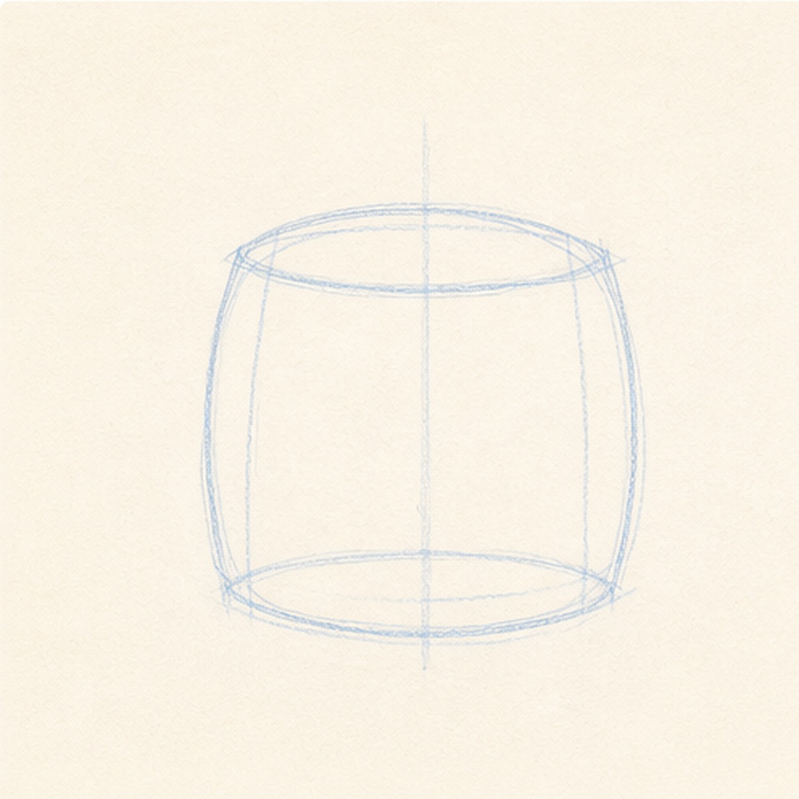
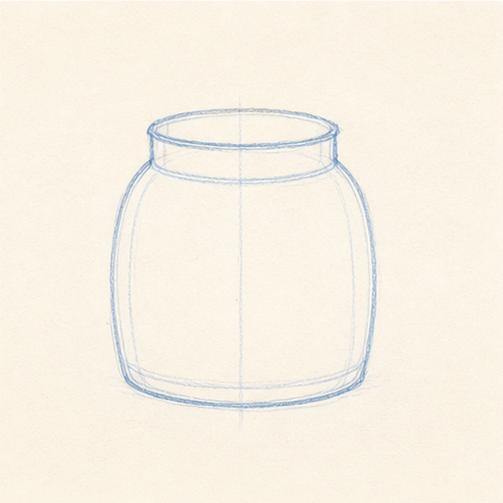
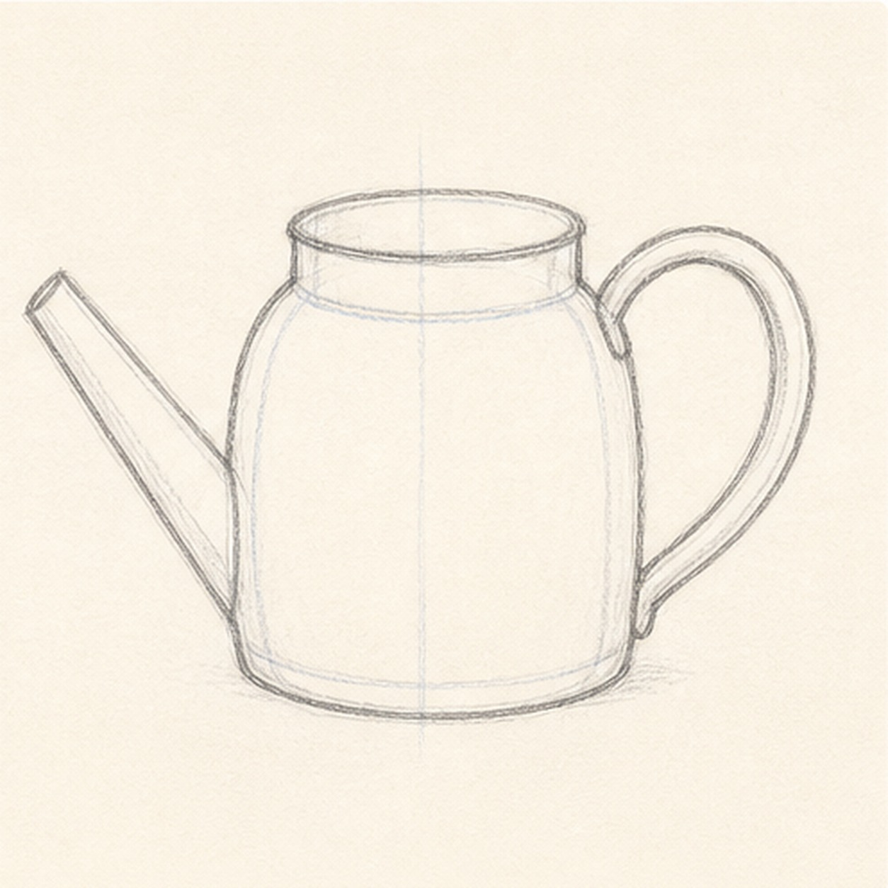
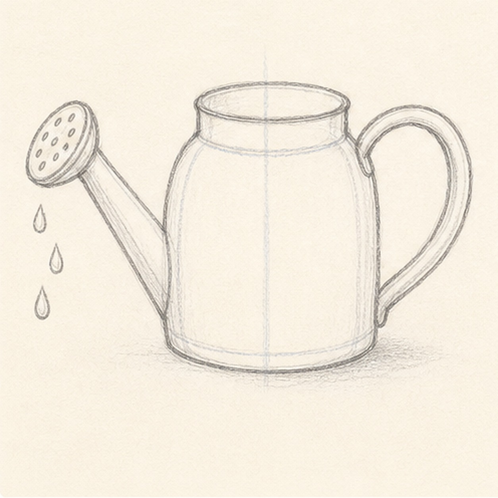
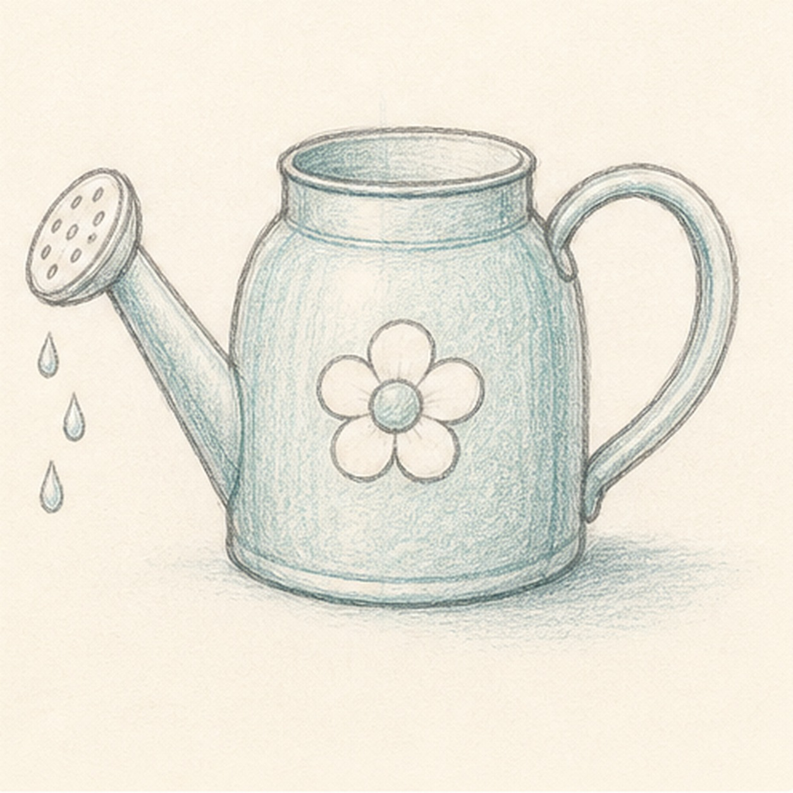

From the archive
Let's draw a watering can
Treat this as one small practice round: build the subject lightly, notice the shapes, then darken only the lines that help the finished sketch.
-
01

Block in the can body
Draw a light squat oval for the watering can body, then add two soft side guides and a faint center line to keep the can balanced.
Sketch tip: Keep the body wider than it is tall. That rounded base gives the can its friendly, sturdy shape.
-
02

Shape the rim and base
Darken the rounded body, add an oval opening and short neck on top, then place a shallow base curve along the bottom.
Sketch tip: Match the top and bottom curves. If the rim tilts too much, the can will look like it is spilling.
-
03

Add the handle and spout
Attach a large C-shaped handle on the right, then taper a long spout from the left side of the can.
Sketch tip: Sketch both handle edges before pressing harder. The handle should feel hollow, not like one thick loop.
-
04

Place the rose and drops
Cap the spout with a rounded sprinkler rose, dot in the small holes, and draw a few falling drops below it.
Sketch tip: Keep the rose angled with the spout. The drops can stagger downward instead of forming a straight line.
-
05

Add the decal and color
Draw a simple flower on the front of the can, shade the metal lightly with teal pencil, and add a pale cast shadow underneath.
Sketch tip: Leave open paper inside the teal color. A watering can should feel sketched, not painted solid.
-
06
Finish the keeper lines
Deepen the strongest body, rim, handle, spout, rose, drops, flower decal, color, and shadow marks without adding new garden props.
Sketch tip: Stop before the texture gets heavy. A few confident dark edges make the loose color look intentional.